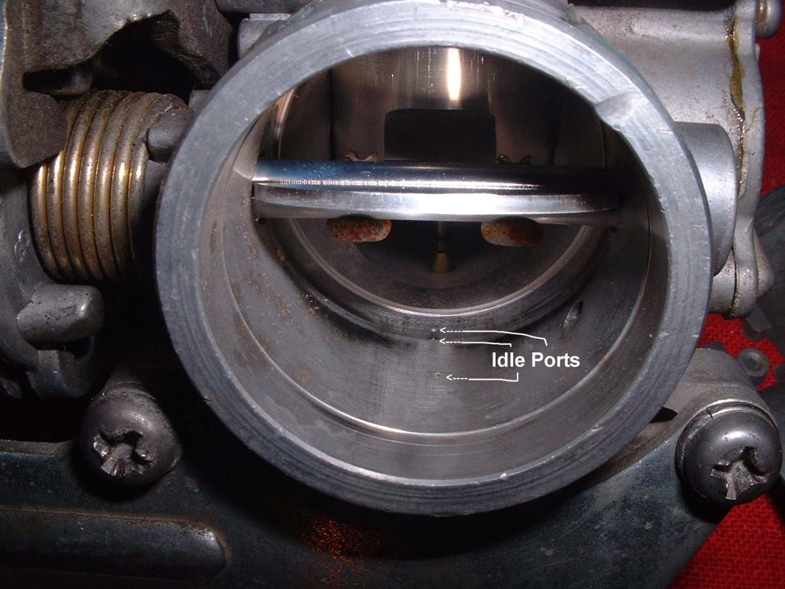
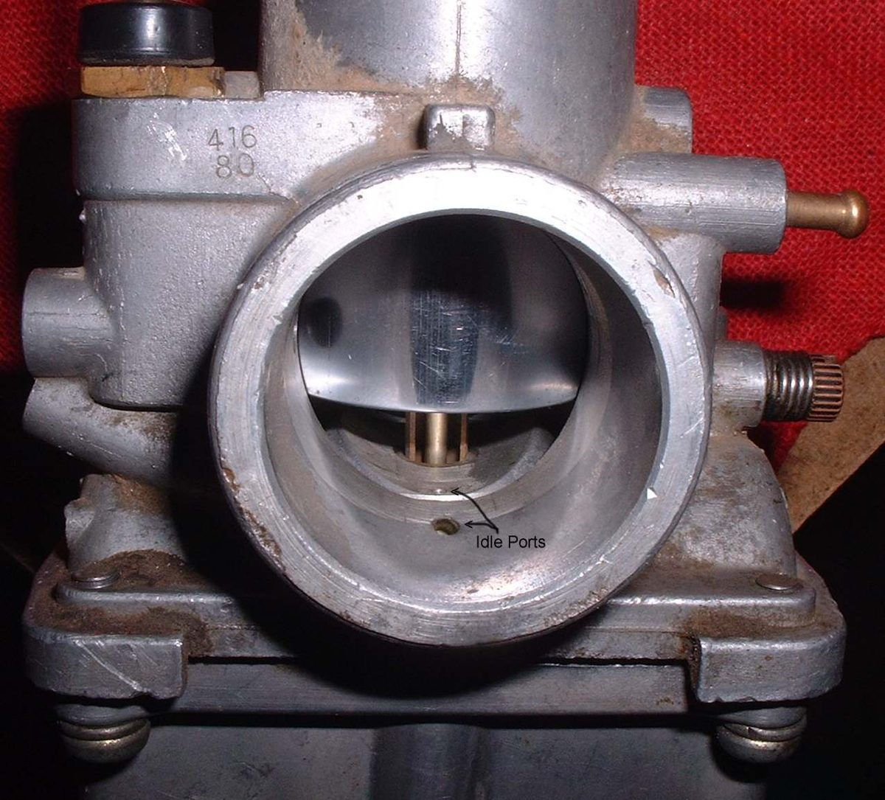
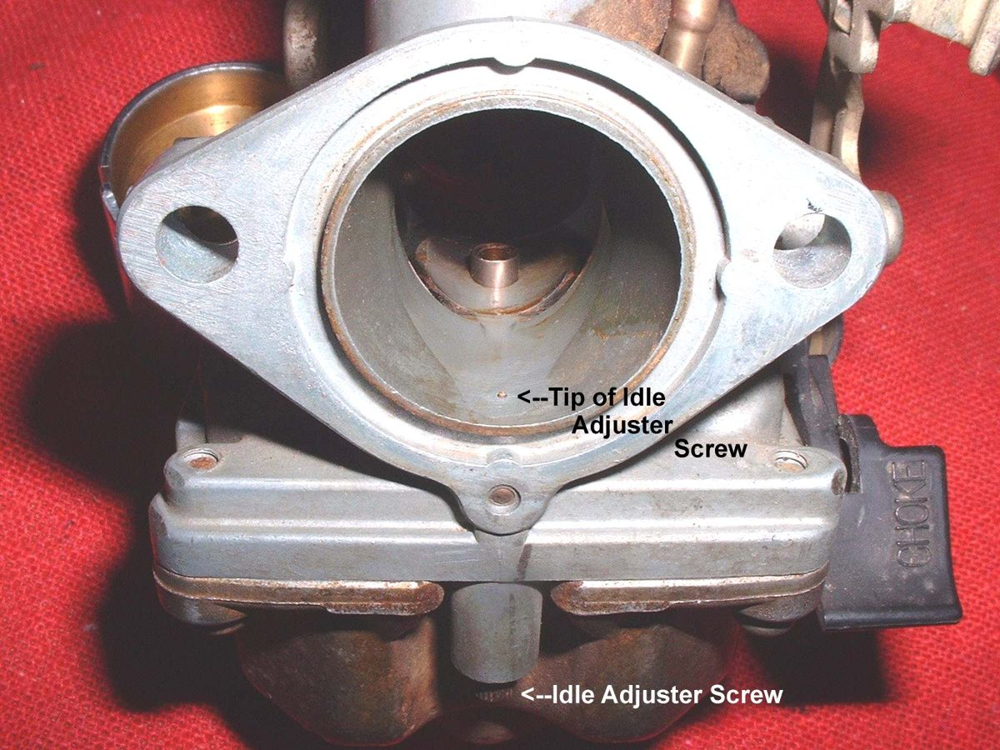
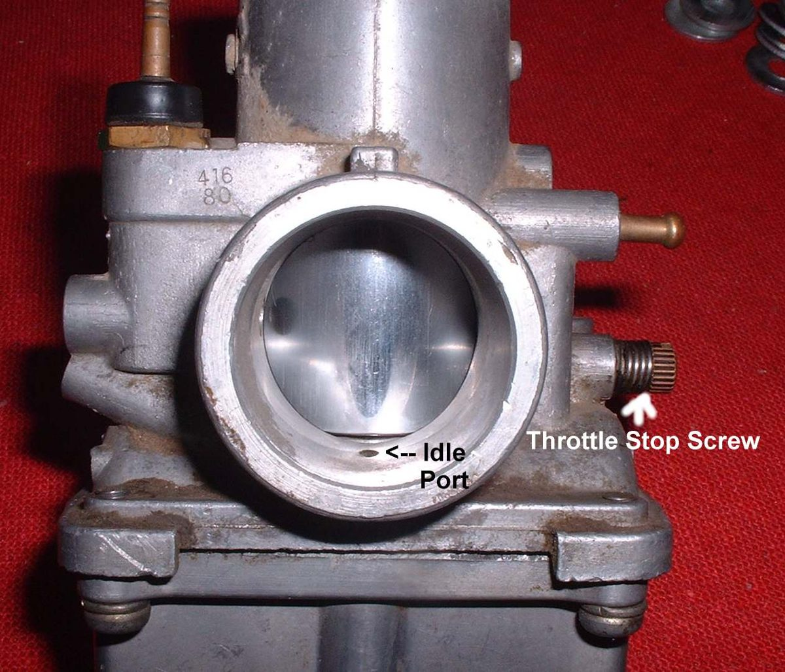

The idle circuit controls the engine from idle up to about one quarter throttle. It has an idle jet, a mixture screw and a throttle stop screw. The mixture screw can be one of two kinds. On an air screw, turning it changes how much air mixes with the fuel from the idle jet, and it is on the air cleaner side. On a fuel screw, it changes how much fuel enters the throat, and it is on the engine side. The screw affects the mixture at idle and just off idle only. The throttle stop screw sets idle speed. This page adds the types and settings to Adjust carburettor idle speed and mixture.
Safety
- Run the engine outdoors or with exhaust extraction. Keep clear of the chain and hot exhaust.
- Do not set the idle while the bike stands on a stand that can slip.
You need
- The bike's manual for the starting turns. Use the value in your bike's manual.
- A small screwdriver and a clean rag.
Steps
- Find the screw. It may be on either side, on top, or low at the front. A fuel screw is longer and finer than an air screw. A plug may cover it on newer bikes. Pry out or drill the plug carefully, and check local rules first.
- If the screw is out for cleaning, first turn it in until it seats gently and count the turns. Write the number down. Refit to the same number. Remove any tiny washer or O-ring with a needle before using spray cleaner.
- If there is no manual value, many carburettors start near one to one and a half turns out from seated. This is only a starting point.
- Warm the engine fully.
- Set the idle speed with the throttle stop screw to a low, steady idle.
- Turn the mixture screw in until the engine stumbles, then out until it stumbles. Leave it halfway between. Or turn it for the highest idle speed, then lower the speed with the stop screw and repeat.
- Check the engine picks up cleanly when the throttle is opened.
Check your work
- Even idle without hunting. The throttle opens without a stumble.
- The engine does not die when the throttle snaps closed.
If it did not fix the problem
- Idle runs up then dies: look for an air leak at the intake rubber. See Find an intake air leak.
- Tight valves also upset idle: Check and adjust valve clearance.
- Blocked idle jet: Clear carburettor jets and passages.